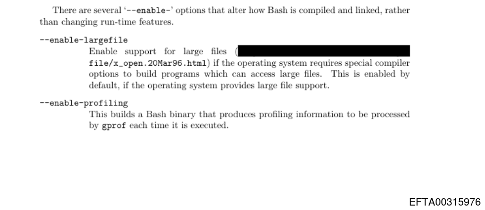

justice.gov/epstein/files/DataSet%209/EFTA00315849.pdf
Why is the Bash Manual in the Epstein files and why did part of it on page 128 get censored
Another question to be begged is if this means that the Epstein Files are GPL Licensed or not, or rather GNU Free Documentation License (GFDL) ;)
Perhaps the GNU Bash Manual was one of Epstein's Clients ;)
I've found a file containing notices for the GPL too.